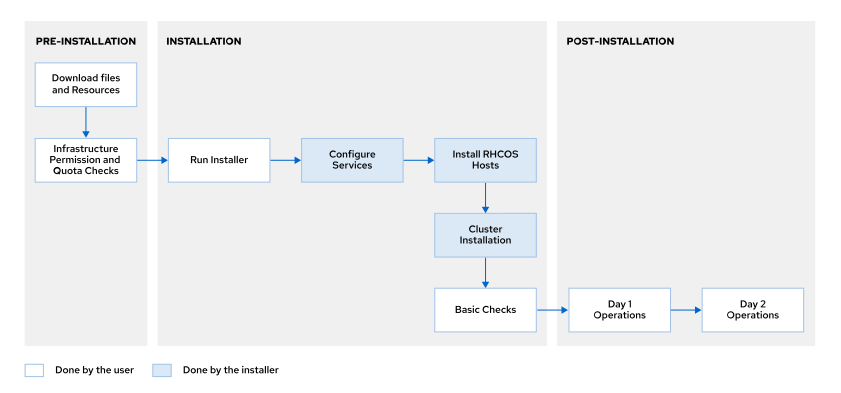
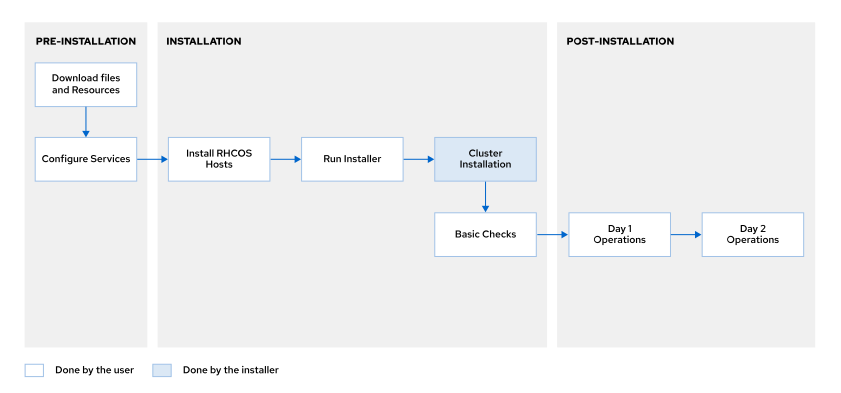
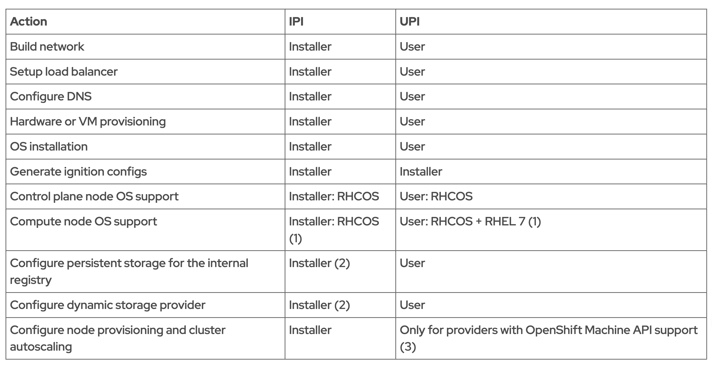

1. Intro to OpenShift Installation
Course Objectives: Installing OpenShift on a cloud, virtual, or physical infrastructure.
| Installation method \ Infrastructure Type | Cloud | Virtual (Hypervisor) | Physical |
|---|---|---|---|
| UPI | ✅ Chapter 2 | ✅ Chapter 3 | ✅ Chapter 4,5,6 - a.k.a OC installation without Infrastructure Provider |
| IPI | ✅ Chapter 2 | ✅ Chapter 3 | IPI on Bare Metal |
In what case does the Administrator chose UPI over IPI?
Two possible cases:
- The Administrator does not have access to a cloud environment and has restricted access to the company’s network configuration.
- The Administrator wants fine-grained control over the OpenShift installation process.
Linux distribution in Openshift
During the installation process. there will be different nodes:
- Bastion Node: used for administrative access
- Bootstrap Node: temporary, used only during installation.
- Master Nodes: runs control plane components.
- Worker Nodes: Runs applications and workloads.
They all should use Redhat Linux distribution(e.g. in our tutorial RHCOS)
Linux distribution: OC vs K8S
- While Kubernetes supports all cloud and Linux distributions, making it widely accessible to organizations using various platforms
- OpenShift supports only Red Hat distributions, such as Red Hat Enterprise Linux (RHEL), CentOS, and Fedora.
1. Installation Methods¶
Operations
- Day-0 - Planning & Alignment: Architecture design, Tool selection, Infrastructure Planning, Security & Compliance
- Day-1 - Deployment(Automation): Infrastructure provisioning, Code deployment, Database Setup, Security configurations
- Day-2 - Maintenance, Monitoring, and Optimization: Monitoring and Alerting, Incident response, Routine maintenance, Performance tuning
To deploy an OpenShift Container Platform cluster, administrators must use the openshift-install binary.
To deploy an OpenShift Container Platform cluster, administrators must use the openshift-install binary(a.k.a. The OpenShift Installer). This cmd then generates ignition configuration files（字面意思：点火文件） for the bootstrap, control plane nodes, and compute nodes.
where to find Ignition File?
The ignition process loads the ignition file configuration files from one of the following locations:
- Local disk
- Cloud metadata
- Over the network using HTTP or HTTPS
Danger
The Ignition config files that the installation program generates contain certificates that expire after 24 hours, which are then renewed at that time. If the cluster is shut down before renewing the certificates and the cluster is later restarted after the 24 hours have elapsed, the cluster automatically recovers the expired certificates. The exception is that you must manually approve the pending node-bootstrapper certificate signing requests (CSRs) to recover kubelet certificates. See the documentation for Recovering from expired control plane certificates for more information.
Consider using Ignition config files within 12 hours after they are generated, because the 24-hour certificate rotates from 16 to 22 hours after the cluster is installed. By using the Ignition config files within 12 hours, you can avoid installation failure if the certificate update runs during installation.
Example of Ignition File
For more information check here.
{
"ignition": {
"version": "3.1.0" # Ignition version
},
"passwd": { # Configures SSH public keys for the user core.
"users": [
{
"name": "core",
"sshAuthorizedKeys": [
"ssh-rsa AAA...hlw== lab@utility.lab.example.com\n",
"ssh-rsa AAA...3DR\n"
]
}
]
},
"storage": { # Storage section
"files": [
{
...output omitted...
{
"overwrite": false,
"path": "/etc/motd", # Appends to the /etc/motd file the base64 encoded source data.
"user": {
"name": "root"
},
"append": [
{
"source": "data:text/plain;charset=utf-8;base64,VGh...lCg=="
}
],
"mode": 420
},
...output omitted...
# Creates a systemd service unit called `bootkube.service` that executes the script:
# `/usr/local/bin/bootkube.sh`
"systemd": {
"units": [
{
"contents": "[Unit]\nDescription=Bootstrap a Kubernetes cluster\nRequires=crio-configure.service\nWants=kubelet.service\nAfter=kubelet.service crio-configure.service\nConditionPathExists=!/opt/openshift/.bootkube.done\n\n[Service]\nWorkingDirectory=/opt/openshift\nExecStart=/usr/local/bin/bootkube.sh\n\nRestart=on-failure\nRestartSec=5s\n",
"name": "bootkube.service"
},
...output omitted...
}
]
}
}
By default, the data stored in ignition files is encoded in base64. For inspection, you can decode this data in plain text using the base64 -d command:
[user@demo ~]$ echo "VGh...lCg==" | base64 -d
This is the **bootstrap node**; it will be destroyed when the master is fully up.
The primary services are release-image.service followed by bootkube.service. To watch their status, run e.g.
journalctl -b -f -u release-image.service -u bootkube.service
Check the ignition configs used in the system:
cat /boot/ignition/config.ign
Chekc the ignition logs:
journalctl -t ignition
Methods¶
The OpenShift Installer offers the following installation methods:
1. IPI / Full-stack Automation¶
- also called installer-provisioned infrastructure (IPI).
- administrators install OpenShift with minimal manual intervention in an opinionated manner.
- The OpenShift installer deploys the cluster on infrastructure that the installer provisions and the cluster maintains.
- The OpenShift installer controls all installation areas, including infrastructure provisioning

2. UPI / Pre-existing Infrastructure¶
- also called user-provisioned infrastructure (UPI).
- Administrators can use the OpenShift installer to deploy a cluster on infrastructure that they prepare and maintain themselves.
- Administrators are responsible for creating and managing their infrastructure

IPI vs UPI

Prerequisites¶
General Prerequisites¶
- Provision a bastion host.
- Generate an SSH key on the bastion host: for remote access to the OpenShift nodes (bootstrap, master, and worker nodes)
- Download and install
openshift-installon the bastion host. - Download and install
ocon the bastion host. - Get the registry
pull-secret. - OpenShift cluster nodes must have access to a Network Time Protocol (NTP) server.
- Ensure that the infrastructure network firewall fulfills the OpenShift network access requirements.
Firewall Prerequisites¶
Some Ports+Protocol prerequisites for:
- Connectivity Requirements from All Cluster Nodes to All Cluster Nodes
- Connectivity Requirements from All Cluster Nodes to Control Plane Nodes
- API Load Balancer Ports
- Application Ingress Load Balancer Ports
IPI specific Prerequisites¶
- Verify infrastructure permissions and quotas.
- For cloud environments, a cloud account with required permissions and quotas is required.
UPI specific Prerequisites¶
- Configure network services: DNS etc.
- Provide hardware (physical or virtual) for cluster nodes.
- Install RHCOS on cluster nodes.
DNS service¶
When installing OpenShift using the UPI, one of the network services that administrators must configure is the DNS service. Administrators must configure the DNS service using DNS records. A complete DNS record takes the form <component>.<cluster_name>.<base_domain>:
<cluster_name>is the name of the cluster (for instance ocp4).<base_domain>is the cluster base domain configured in theinstall-config.yamlconfiguration file (for instanceexample.com).- The reverse DNS records (PTR) are also required
The following DNS Records are needed:
| Component | Record | Description |
|---|---|---|
| Kubernetes API | api.<cluster_name>.<base_domain> |
DNS A/AAAA or CNAME and PTR records to identify the API load balancer for the control plane nodes (resolvable by both clients external to the cluster and from all the nodes within the cluster). |
| Kubernetes API | api-int.<cluster_name>.<base_domain> |
DNS A/AAAA or CNAME and PTR records to identify the API load balancer for the control plane nodes (resolvable from all the nodes within the cluster). |
| Routes | *.apps.<cluster_name>.<base_domain> |
Wildcard DNS A/AAAA or CNAME record to identify the Application Ingress load balancer that targets the cluster nodes that run the ingress router pod (resolvable by both clients external to the cluster and from all the nodes within the cluster). |
| Cluster nodes | <name>.<cluster_name>.<base_domain> |
DNS A/AAAA or CNAME and PTR records to identify each cluster node, including Bootstrap Node (resolvable by the nodes within the cluster). |
BIND
BIND(Berkeley Internet Name Domain) is one of the most widely used Domain Name System (DNS) server software. The BIND configuration is typically managed via two main files:
named.conf: The primary configuration file defining server settings, zones, and ACLs.- Zone files: Contain the actual DNS records for each managed domain. File name and extension are defined in the
*.conffile
[root@utility ~]# cat /etc/named.conf
...output omitted...
zone "example.com" {
type master;
file "example.com.db";
allow-update { none; };
};
example.com.db might looks like this:
[root@utility ~]# cat /var/named/example.com.db
$TTL 1D
@ IN SOA dns.ocp4.example.com. root.example.com. (
2019022400 ; serial
3h ; refresh
15 ; retry
1w ; expire
3h ; minimum
)
IN NS dns.ocp4.example.com.
dns.ocp4 IN A 192.168.50.254
api.ocp4 IN A 192.168.50.254
api-int.ocp4 IN A 192.168.50.254
*.apps.ocp4 IN A 192.168.50.254
bootstrap.ocp4 IN A 192.168.50.9
master01.ocp4 IN A 192.168.50.10
master02.ocp4 IN A 192.168.50.11
master03.ocp4 IN A 192.168.50.12
worker01.ocp4 IN A 192.168.50.13
worker02.ocp4 IN A 192.168.50.14
Setup and enable BIND
- install Bind
- Create config file and zone file
- update file permission
- restart Bind
- Test the config:
<!-- Check the configuration syntax: --> sudo named-checkconf <!-- Check zone files --> sudo named-checkzone example.com /var/named/example.com.zone <!-- Query DNS Server --> dig @localhost example.com dig @localhost -x 192.168.0.1
Warning
By default, when installing OpenShift using the full-stack automation method on supported cloud providers, the OpenShift installer automatically performs the DNS service configuration.
Administrators must configure the DNS service when installing OpenShift using the full-stack automation method on the following infrastructures:
- (Cloud) Red Hat OpenStack Platform cloud provider using an external DNS
- (Virtual) VMware vSphere
- (Physical) Bare metal
Installation Modes¶
Depending on the external connectivity of the cluster, administrators can use one of the following installation modes:
1. Connected¶
The cluster nodes have internet access to pull container images from the quay.io and registry.redhat.io registries. The connected installation mode is supported when using the full-stack automation (IPI) or the pre-existing infrastructure installation (UPI) methods.
2. Disconnected¶
Administrators use this installation mode when a connected installation is not possible. The OpenShift installer uses a local container registry to pull container images.
➡️ Not all cloud providers support installation in disconnected mode.
- mirror the required images to the local container registry and obtain the imageContentSources data for your OpenShift version
- start OpenShift Installation Process, you can customize
install-config.yamlfile
2. Cluster Installation¶
无论是 UPI 还是 IPI, 都有一个步骤是Installer完成的，那就是 Cluster Installation. 该步骤的具体原理见这里。
需要的执行步骤有：
- Fulfill the installation prerequisites.
- Create the installation directory.
This directory stores all the files created by the OpenShift installer.[user@demo ~]$ mkdir ${HOME}/ocp4-cluster - Create config YAML file.
Use the Openshift Installer to create the configuration file (install-config.yaml), and save it in the folder/ocp4-cluster:Use the SSH key in the# generate a cluster SSH public key `ocp4-cluster.pub` # ⚠️ The **cluster SSH key** enables access from the bastion host to the cluster nodes! ssh-keygen -t rsa -b 4096 -N '' -f ${HOME}/.ssh/ocp4-clusterinstall-config.yamlfile generation[user@demo ~]$ openshift-install create install-config \ > --dir=${HOME}/ocp4-cluster ? SSH Public Key /home/user/.ssh/ocp4-cluster.pub ? Platform aws INFO Credentials loaded from the "default" profile in file "/home/user/.aws/credentials" ? Region us-east-2 ? Base Domain mydomain.com ? Cluster Name ocp4 ? Pull Secret [? for help] +++++ INFO Install-Config created in: /home/user/ocp4-cluster -
Generate the Kubernetes manifests.
A Kubernetes manifest is a file that describes one or more Kubernetes API objects, such as Pods, Services, Deployments or MachineConfigs. This cmd takes theinstall-config.yamlas input, and gerates manifest under the folder/home/user/ocp4-cluster/manifestsand/home/user/ocp4-cluster/openshift:openshift-install create manifests \ > --dir=${HOME}/ocp4-clusterManifest customization
You can ONLY modify the manifest if its documented in Redhat support instruction. No free styles pls
-
Generate the ignition configuration files.
This cmd generates ignition files (master.ign,worker.ign,bootstrap.ign) under the folder/home/user/ocp4-cluster:openshift-install create ignition-configs \ > --dir=${HOME}/ocp4-clusterIgnition files valid time period
Ignition files are valid for 24 hours, after which the included certificates expire. If so, create new ignition files.
ignition file customization
You can ONLY modify the ignition file if its documented in Redhat support instruction. No free styles pls
-
(Only in IPI) Deploy the OpenShift cluster.
openshift-install create cluster \ > --dir=${HOME}/ocp4-cluster --log-level=debugSkip step 6 in UPI Environment
In a UPI / pre-existing infrastructure installation, you don't nned to run the
openshift-install create clustercommand, because you have already:- Installed RHCOS on the cluster nodes (masters, workers, and bootstrap).
- Set up networking, storage, and load balancers.
- Configured DNS, ignition files, and more.
Therefore, just do the following to observe the installation:
openshift-install wait-for bootstrap-complete \ > --dir=${HOME}/ocp4-cluster --log-level=debug openshift-install wait-for install-complete \ > --dir=${HOME}/ocp4-cluster --log-level=debug -
Verify the OpenShift cluster health. You can start using the
occommand once the Bootstrap has the Kubernetes API running on the temporary control plane.# 1. Configuring the KUBECONFIG environment variable to use the kubeconfig file. export KUBECONFIG=${HOME}/ocp4-cluster/auth/kubeconfig # 2. Using the kubeadmin credentials stored in the kubeadmin-password file. # 3. Login to the Kubernetes API as cluster-admin oc login -u cluster-admin -p [PASSWORD] # 4. monitoring: # the installation process watch 'oc get clusterversion; oc get clusteroperators; \ > oc get pods --all-namespaces | grep -v -E "Running|Completed"; oc get nodes' # how the cluster version operator (CVO) installs the cluster operators watch 'oc get clusterversion; oc get clusteroperators; \ > oc get pods --all-namespaces | grep -v -E "Running|Completed"; oc get nodes' # print events oc get events -A -w
Warning
Kubernetes manifests and ignition configuration files are created automatically in the create cluster step, if they do not exist already. (True or False)
3. Troubleshooting¶
Stages
The cluster installation has 3 main stages:
- Bootstrap(Bootkube) Stage:
- The OpenShift installation process deploys the bootstrap node.
- The
release-imagesystemd service running on the Bootstrap Node downloads the container images required to start the temporary control plane. bootkubesystemd service running on the Bootstrap Node starts the temporary control plane.
- Bootstrap(Temporary Control Plane) Stage
- The Kubernetes API and the temporary control plane are running on the bootstrap node.
- the Bootstrap Node waits until the control plane nodes boot and form an etcd cluster.
- the Bootstrap Node schedules the production control plane to the control plane nodes.
- Production Control Plane Stage:
After the production control plane runs on the control plane nodes, the cluster version operator (CVO) finishes the OpenShift cluster deployment.
1. Bootstrap(Bootkube) Stage¶
At this stage, the Kubernetes API is not yet available, use ssh to get logs
Assumes that 192.168.50.9 is the Bootstrap Node IP address. Use the cluster SSH private key to connect to the Bootstrap Node from the bastion host:
# login to Bootstrap Node
ssh -i ${HOME}/.ssh/ocp4-cluster core@192.168.50.9
# debug two services: release-image & bootkube
journalctl -b -f -u release-image.service -u bootkube.service
# use `crictl` command on the **Bootstrap Node** to look for failed containers and print their logs:
sudo bash
crictl ps -a
crictl ps logs <container_id>
2. Bootstrap(Temporary Control Plane) Stage¶
Here, the Kubernetes API is available on the Bootstrap Node --> You can use SSH to get logs from the Bootstrap Node with the following config:
# export login config
export KUBECONFIG=${HOME}/ocp4-cluster/auth/kubeconfig
download log¶
# pull log from bootstrap machine to a *.tar.gz file
openshift-install gather bootstrap \
> --dir=${HOME}/ocp4-cluster
# unzip and check the log
cd ocp4-cluster
tar -xvzf log-bundle-20210107135825.tar.gz
cd log-bundle-xxxx
# check the log of the bootstrap systemd services
ls bootstrap/journals/
# check the bootstrap containers
ls bootstrap/containers/
# check the control plane nodes,
ls control-plane/
UPI for openshift-install gather
when using UPS, you must specify the IP addresses of the bootstrap and control plane nodes when running the openshift-install gather bootstrap command.
openshift-install gather bootstrap \
> --dir=${HOME}/ocp4-cluster \
> --bootstrap <bootstrap_address> \
> --master <master_1_address> \
> --master <master_2_address> \
> --master <master_3_address>"
check log in cluster¶
oc get nodes
oc get clusterversion
oc get clusteroperators
oc get events -A -w
oc adm node-logs -u crio master01
oc adm node-logs -u kubelet master01
oc debug node/master01
# after starting the debug node, you can do:
sh-4.2# chroot /host
sh-4.2# journalctl -f
sh-4.2# sudo bash
sh-4.2# crictl ps -a
sh-4.2# crictl logs <container_id>
crio & kubelet
The OpenShift cluster nodes run very few local services because most of the system services run as containers. The main exceptions are the cri-o container engine and the kubelet, which are systemd service units.
4. Verifying Installation¶
6. Hosted Openshift¶
OpenShift can be installed using either IPI or UPI methods, and both options can be used on either on-premise data centers or IaaS cloud providers.
IaaS cloud providers that can host Openshift¶
| Hosted offering | Cloud hosted | Billed by | Managed by | Supported by | Doc |
|---|---|---|---|---|---|
| Microsoft Azure Red Hat OpenShift | Azure | Microsoft | Red Hat and Microsoft | Red Hat and Microsoft | Doc |
| Red Hat OpenShift Dedicated | AWS or GCP | Red Hat (OpenShift), AWS or GCP (Infrastructure) | Red Hat | Red Hat | Doc |
| Red Hat OpenShift on IBM Cloud | IBM Cloud | IBM | IBM | Red Hat and IBM | Doc |
| Red Hat OpenShift Service on AWS | AWS | AWS | Red Hat and AWS | Red Hat and AWS | Doc |